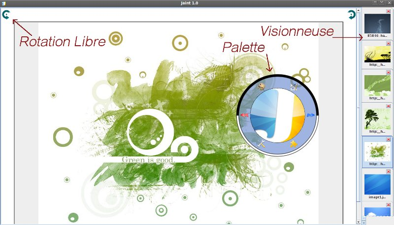

Présentation de Jaint

Jaint est un logiciel de retouche d'images simple, ergonomique, épuré, intuitif et évolutif, adapté au grand public. Il permet d'ouvrir plusieurs types d'images (d'extension .bmp .png .jpg .jpeg), de les retoucher, d'appliquer des effets, de les redimensionner et de les sauvegarder. Il est également possible d'intégrer de nouveaux plugins à Jaint, afin qu'il soit adapté aux besoins de l'utilisateur.
L'IHM ne comportant aucun menu, les différentes fonctions sont accessibles grâce à une palette d'outils circulaire. Elle apparaitra et disparaîtra au clic droit de la souris, facilitant l'accès a ux outils et laissant ainsi un espace de travail plus important.

Afin d'afficher la palette de dessin il suffit d'effectuer un clique droit dans le logiciel
Afin d'afficher la palette d'option il suffit d'effectuer un clique droit en maintenant la touche CTRL dans le logiciel
Afin d'afficher la palette de gestion de fichier il suffit d'effectuer un clique droit en maintenant la touche SHIFT dans le logiciel